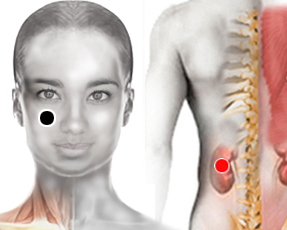

Plasmodium vivax
Tipo: Parásito
pómulo - riñón contralateral
palma - palma
parietal - riñón (hl) 
pómulo - pómulo
malar - riñón contralateral
cervical 1 - cervical 1

Generalidades:
Paludismo, Malaria, Fibromialgia. Dolor articular en múltiples localizaciones y cansancio generalizado, febrículas vespertinas. Se confunde con Artritis o Reumatismo. Falso lupus. Se rastrean los 2 pómulos.
Transmisión:
Por picadura del mosquito Anópheles (hembra). Usar repelente, manga larga, evitar la proliferación de mosquitos.